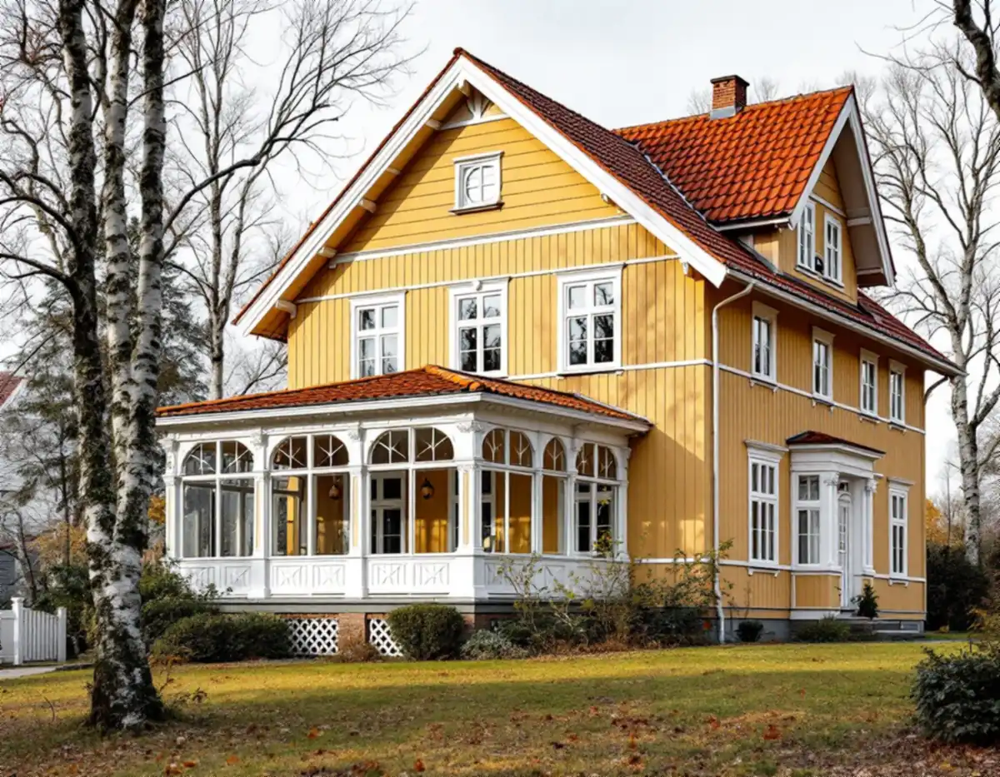
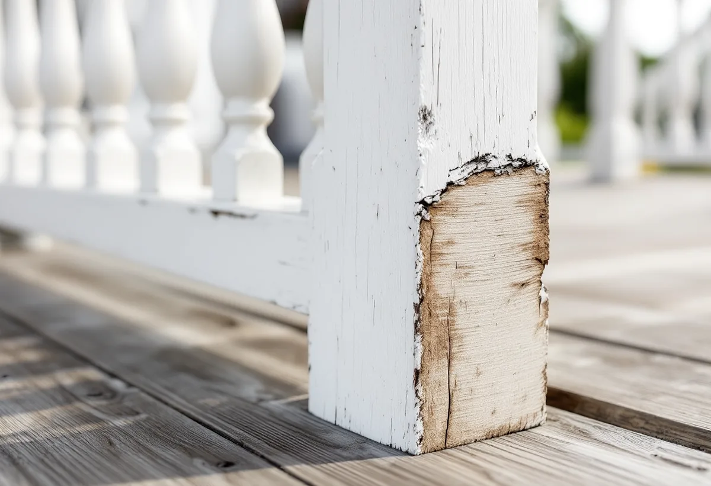

Platsbesök
Vi känner på stolpfötter, golv och räcken och ser vad som går att spara.
Mälarhöjden växte upp som villasamhälle efter privata initiativ, och villastäderna fick individuellt utformade hus med glasverandor och snickarglädje. När en veranda börjar ruttna eller en ytterdörr ska bytas är frågan om delen kan lagas. Geal Entreprenad AB reparerar och bygger verandor, dörrpartier och snickerier i Hägersten, med gratis platsbesök och skriftligt kostnadsförslag.

Stadens vägledning för småhus- och villaområden räknar Mälarhöjden till villastäderna. Där växte villasamhället upp efter privata initiativ genom större markförvärv, och eftersom villastäderna var privat organiserade blev bebyggelsen brokigare än i de egnahemsområden som staden planerade. Trä var det dominerande fasadmaterialet, och glasverandor, takkupor, snickarglädje och färgsättning gav stadsdelarna variation.
I villastadskapitlet visar vägledningen exempel från Bromma kyrka på vad som bär husens karaktär. Ett hus från 1920-talet har brant sadeltak med tegelpannor, småspröjsade fönster placerade i fasadliv och knutar i form av pilastrar med kapitäl. Ett hus från 1940-talet har ett smidesräcke vid entrén.
I tabellen är Mälarhöjden kulturhistoriskt värdefull miljö och ett område med generösa byggrätter. I Hägersten finns också småstugeområdet Hökmossen, som pekas ut som kulturhistoriskt värdefull miljö.

Stockholms stad påminner om att alla ändringar ska göras varsamt, oavsett om byggnaden är kulturhistoriskt värdefull eller inte. Är huset eller området särskilt värdefullt får åtgärden inte förvanska dess karaktär och värden, och det gäller oavsett om åtgärden kräver lov eller anmälan. Vägledningen för villastaden råder dig att ta tillvara eller återskapa karaktärsskapande material, kulörer, byggnadsdelar och detaljer i så stor utsträckning som möjligt.
I praktiken betyder det att en veranda med en rutten stolpfot eller ett trasigt räcke sällan behöver rivas. Vi tar bort det skadade virket, sätter in nytt i samma dimension och profil och lämnar resten av verandan orörd. En knutbräda eller ett fönsterfoder som saknas kan tillverkas efter en bevarad bit på huset.
Boverket skriver att en ny öppning för ett fönster eller en dörr i ett småhus inte kräver bygglov, och inte heller anmälan så länge byggnadens bärande delar inte påverkas väsentligt. Stockholms stad skriver ändå att du ofta behöver bygglov för nya eller ändrade dörrar och fönster, eftersom det beror på byggnaden. Staden räknar upp ändringar som att byta material eller kulör, ändra storlek eller placering, ändra profilering på karmar, bågar och spröjsar och lägga till eller ta bort spröjs.
Avgörande är Stadsmuseets karta. Ligger fastigheten inom grön eller blå ring, eller är huset markerat med blått eller grönt, krävs bygglov även för åtgärder som annars är lovfria. En ny öppning kan också påverka den bärande konstruktionen, och staden skriver att du då kan behöva förstärka.
Till en ansökan kan det behövas en detaljritning av till exempel räcken eller fönster, i skala 1:10, 1:20 eller 1:50. Den tar vi fram när verandan eller entrén ska ändras.
Att bygga tak över en altan eller bygga in den med väggar kan kräva bygglov för tillbyggnad, och staden räknar uterum till tillbyggnaderna. Utan bygglov får tillbyggnaderna på huset vara högst 30,0 kvadratmeter sammanlagt och inte gå över taknocken, men lovbefrielsen gäller inte i särskilt kulturhistoriskt värdefulla miljöer. Om kulörer och målning av verandan finns mer under målare i Hägersten.
Vi känner på stolpfötter, golv och räcken och ser vad som går att spara.
Stadsmuseets karta visar om en ändring av dörr eller veranda kräver lov.
Lister, foder och knutbrädor mäts upp från bevarade delar på huset.
Reparation, nya delar och eventuell ritning redovisas var för sig.
Skadat virke byts ut i samma dimension och profil, resten lämnas kvar.
Vi går igenom arbetet med dig och visar vad som bör ses över framöver.
Skatteverket ger rotavdrag i ett småhus för att reparera och underhålla entrétrappor, balkonger och altaner med tillhörande räcken, förutsatt att de är ihopbyggda med huset, och för att byta och reparera dörrar och dörrlås. Att glasa in balkonger och altaner ger också avdrag.
Bygglovshandlingar och arkitekt ger inget avdrag. Avdraget är 30 procent av arbetskostnaden, högst 50 000 kr per person och år och högst 75 000 kr tillsammans med rutavdrag. Material och resor ingår inte, och Geal drar avdraget direkt på fakturan.
Hur mycket av verandan som går att spara, om nya profiler måste tillverkas och om det behövs ritningar för ett bygglov väger tyngst. Platsbesöket är gratis och du får ett skriftligt kostnadsförslag.
Altan, väggar, dörrar och inredning.
Snickare i Stockholm →Takbyte, takbesiktning och plåtarbeten.
Takläggare i Hägersten →Kuperad tomt, stödmur och dränering.
Byggföretag i Hägersten →Småstugor, typritningar och panel.
Fasadrenovering i Hägersten →Golv i källare och suterrängvåning.
Golvläggare i Hägersten →Efterkrigstidens lägenheter och asbestprov.
Köksrenovering i Hägersten →Lägenheter, villor vid Mälaren och radhus.
Målare i Hägersten →Låglutande tak och takavvattning i Hägersten.
Plåtslagare i Hägersten →